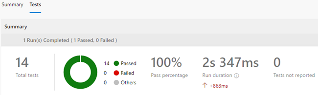

DevOps Project
| Project Overview | |||
|---|---|---|---|
| Adward | Best project of the course | ||
| Background | This is a project under the subject: "Enterprise Systems DevOps Project" in my master's course. | ||
| Project Objectives | To apply DevOps principles and tools to the software development processes. | ||
| Team Size | 10 people | Duration | 4 sprints in 12 weeks (Effort: ~10h / week / person) |
| Scope of work |
|
||
| Technologies used |
|
||
| Tools Used |
|
||
| Team Organisation |

|
||
| My contribution to the project |
I have participated in almost all phases of the project:
|
||
| Source code |
Cannot be made public due to the integrity of the master's course |
||
Brief overview of project implementation
-
Voting System Entity Relationship Diagram:

-
Prepare data and bulk insert data into local database:
-
Git's workflows

-
Visualisation of Backend Architecture:
-
Implemented APIs:
-
An API example:
-
Visualisation of Frontend Architecture:
-
Final Product: Voting Results website

-
API Automation Test Script

-
API Automation Test CI/CD on Azure
-
API Automation Test Result

To do:
- Implement error or exception handling
- Implement unit testing
- Perform class design to increase the reusability of data structure and source code.
Node-RED Project
| Project Overview | |||
|---|---|---|---|
| Adward | Best project of the course | ||
| Background | This is a project under the subject: "Could Computing" in my master's course. | ||
| Project Objectives | Use Node-RED and various cloud services to develop an Enterprise Resource Planning Application module | ||
| Team Size | 5 people | Duration | 8 weeks (Effort: ~10h / week / person) |
| Scope of work |
Develop a grocery stores management system consiting of three main components
|
||
| System main features |
Store Administrator User:
|
Store Customer User:
|
|
| Application Overview |

|
||
| Tools and Services Used |

|
||
| My contribution to the project |
I was a key player from idea to implementation:
|
||
| Source code |
Cannot be made public due to the integrity of the master's course |
||
| Final Product Demo | |||
Project 3
Applied cutting-edge Computer Vision research to improve personalization and image-based recommendations. Applied cutting-edge Computer Vision research to improve personalization and image-based recommendations.Applied cutting-edge Computer Vision research to improve personalization and image-based recommendations.Applied cutting-edge Computer Vision research to improve personalization and image-based recommendations.Applied cutting-edge Computer Vision research to improve personalization and image-based recommendations.Applied cutting-edge Computer Vision research to improve personalization and image-based recommendations.